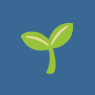

maumm.org 앱
설치 없이 휴대폰 · 아이폰 · PC에서 바로 써요.
물품 구매 관리구의연세정신건강의학과 물품 수요조사 · 결재 · 구매
Nurse United수간호사 인사평가 · 성장 컨설팅

마음엠디CBT 가족치료 프로그램 관리
마음비타민 탁구탁구교실 훈련 · 리그 · 스탯
나의 마음 다이어리마음 날씨 · 마음 플레이리스트
📲 홈 화면에 추가 — 안드로이드 크롬: 메뉴(⋮) → 홈 화면에 추가 · 아이폰 사파리: 공유 → 홈 화면에 추가 · PC 크롬: 주소창 오른쪽 설치 아이콘